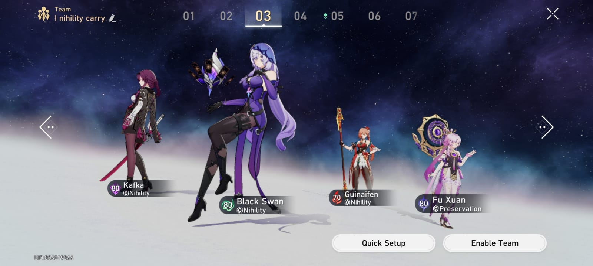
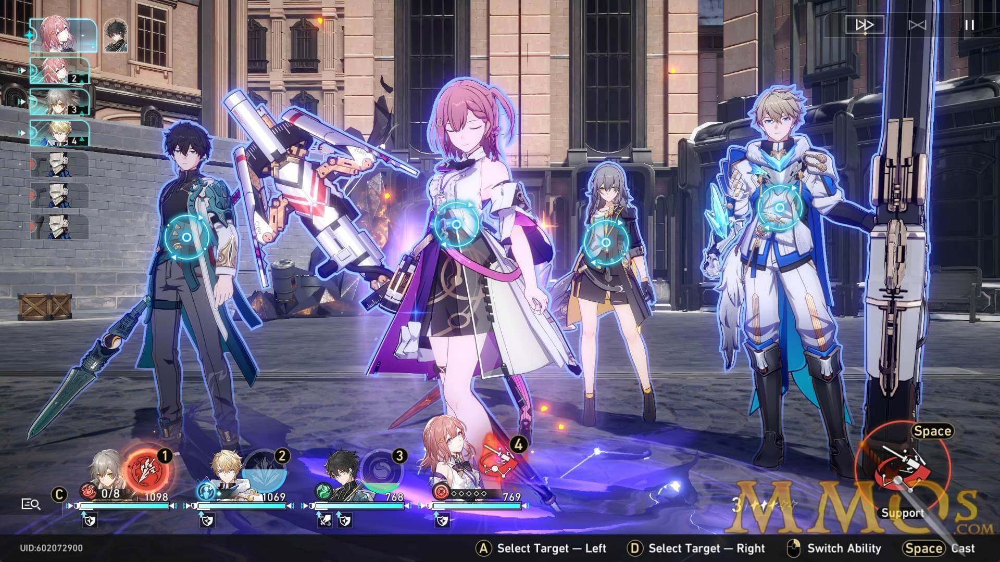

this is a basic Dot Team , the damage is not that best, but you can still play it
Gepard is tank unit, he have the big , badass ult that can give shield to all ally
Lynx is the healer that can remove bad effect from ally
sampo here is not that good character, but he will give you good support for your dps
Kafka in this comp are the main dps, main damage dealer,she can detonate Dot, that's why she is the key if you want to use Dot Team

this is the perfect Dot Team ,the damage is pretty big and so satifying
Kafka here is the main damage dealer in this team, with her kit and support this team can deal more and more damage,but she is pretty sp eater
Black Swan is one of the best kafka support, her damage is pretty huge, and kafka love to be in the same team with her
guinaifen is the same like sampo , she just applyDot as same as sampo, but with fire
Fu Xuanis one of the best tank in this game, like Gepard but she dont give shield to ally, she is the one that get hit by enemy

this is one of the best team in honkai star rail, this is not using Dot but main damage
Fu Xuan is the main tank
Seele is the main dealer, she deals big Quantum Damage to single enemy, and the main stat that you should use is Crit Rate And Crit Damage
Sparkle she is the newest harmony character in honkai star rail, she can give a lot Sp from her ultimate
Lynx she just the healer
Character Speed
In Honkai Star Rail, speed plays a crucial role in determining the sequence of actions during battles, significantly influencing the outcome of each encounter. Here's how speed is impactful in the game:


As the level of the trailblazer increases, the enemy's speed will become faster and often the enemy will attack first. If you don't have a character that can immediately provide a shield with their technique when entering the battle for the first time, your team will suffer a lot of damage. If the situation is against a boss, your team might be destroyed first